My PhD supervision activities span artificial intelligence, computational pathology, biomedical imaging, explainable AI, neuroimaging, mathematical morphology and multimodal medicine, with applications ranging from digital pathology to neuroscience and precision medicine.
20+
PhD Students Supervised
5
Current PhD Candidates
20+
Years of Supervision
Ongoing PhD Supervisions

Spatial Transcriptomics Using Physically Inspired Artificial Intelligence
Topic: Development of physically inspired AI methods for spatial transcriptomics and computational pathology.
PhD candidate, Sorbonne University
Doctoral School of Computer Science, Telecommunications, Electronics of Paris (EDITE) – ED 130
Start: October 2025
Supervision: Daniel Racoceanu, 100%
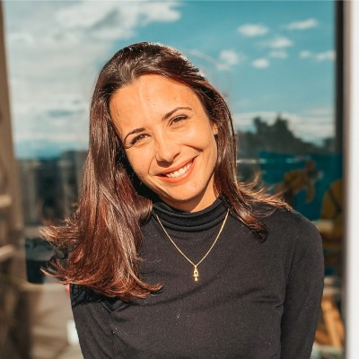
ComPath: Next Generation Computational Pathomics for Personalized Medicine
Topic: Explainable deep learning integration of computational pathology and spatial transcriptomics.
PhD candidate, Sorbonne University
Doctoral School of Computer Science, Telecommunications, Electronics of Paris (EDITE) – ED 130
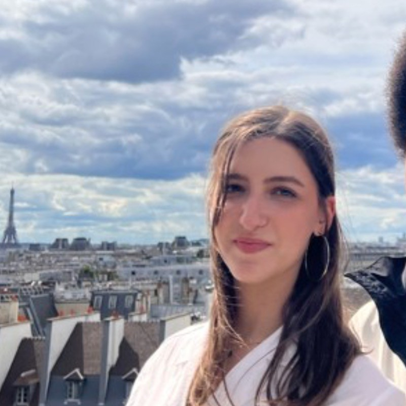
Study of the Heterogeneous Progression of Parkinson's Disease Using Artificial Intelligence and Multimodal MRI
PhD candidate, Sorbonne University
Brain, Cognition and Behavior Doctoral School, Paris - ED 158
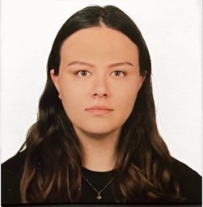
Generative Methods for the Identification of Neuro-Visual Pathologies and Transfer to Artificial Vision
PhD candidate, Sorbonne University
Doctoral School of Computer Science, Telecommunications, Electronics of Paris (EDITE) – ED 130
The Visual Brain in the Context of Blindness: Exploring and Guiding with Machine Learning
PhD candidate, Sorbonne University
Doctoral School of Computer Science, Telecommunications, Electronics of Paris (EDITE) – ED 130
Graduated PhD Students
Decoding the Black Box: Enhancing Interpretability and Trust in AI for Biomedical Imaging
PhD, Sorbonne University, Paris, France
Doctoral School of Computer Science, Telecommunications, Electronics of Paris (EDITE) – ED 130
Defense: 16 Oct. 2024, Paris, France
Representation Learning and Data-Centric Approaches in Computational Pathology. Instantiation to Alzheimer’s Disease
PhD, Sorbonne University, Paris, France
Doctoral School of Computer Science, Telecommunications, Electronics of Paris (EDITE) – ED 130
Defense: 18 Sept. 2024, Paris, France
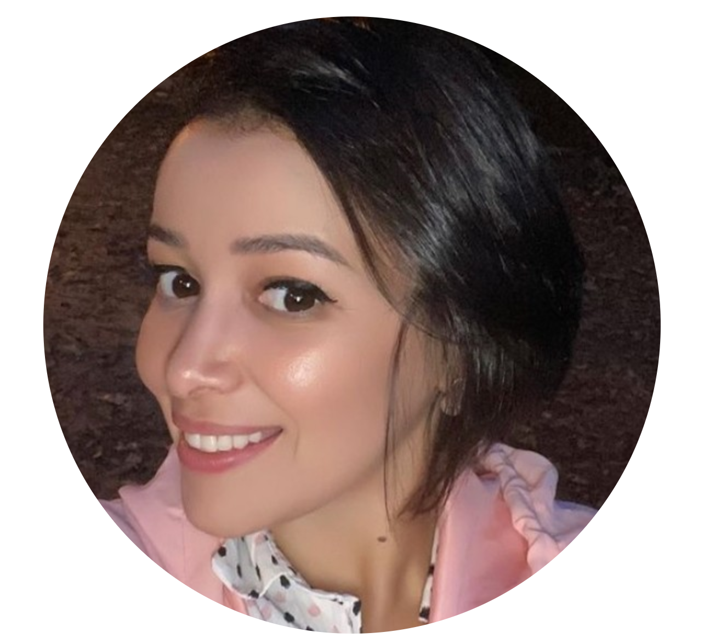
A Joint Discriminative-Generative Approach for Tumor Angiogenesis Assessment in Computational Pathology
PhD, Sorbonne University, Paris, France
Doctoral School of Computer Science, Telecommunications, Electronics of Paris (EDITE) – ED 130
Defense: 2 Sept. 2019, Paris, France
Co-supervised with Dr Wee Kuan Lee, Bioinformatics Institute, A*STAR, Singapore
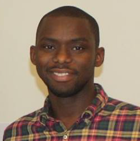
Semantic Modelling of a Histopathology Image Exploration and Analysis Tool
PhD, University Pierre and Marie Curie, Paris, France
Public Health: Epidemiology and Biomedical Informatics, Paris - ED 393
Defense: 8 Dec. 2017, Paris, France
Co-supervised with Prof. Yannick Kergosien, University Cergy Pontoise
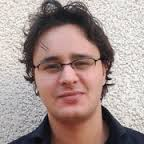
Graph-Based Mathematical Morphology for the Characterization of the Spatial Organization of Histological Structures in High-Content Images
Application: Tumor microenvironment in breast cancer
PhD, University Pierre and Marie Curie, Paris, France
Doctoral School of Computer Science, Telecommunications, Electronics of Paris (EDITE) – ED 130
Defense: 26 Sept. 2017, Paris, France
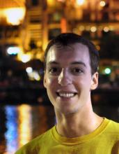
Deep Learning Compact and Invariant Image Descriptors for Instance Retrieval
PhD, University Pierre and Marie Curie, Paris, France
Doctoral School of Computer Science, Telecommunications, Electronics of Paris (EDITE) – ED 130
Defense: 8 June 2016, Paris, France
Co-supervised with Dr Antoine Veillard, Dr Vijay Chandrasekhar and Dr Hanlin Goh, A*STAR Singapore
Digital Reconstruction of Neuronal Structures from 3D Microscopy Data
PhD, National University of Singapore
Defense: 24 March 2014, Singapore
Co-supervised with A/Prof. Wei-Tsang Ooi, National University of Singapore
First position after PhD: Research Fellow, École Normale Supérieure, Paris, France
Dense Crowd Analysis
PhD, University Pierre and Marie Curie, Paris, France
Doctoral School of Computer Science, Telecommunications, Electronics of Paris (EDITE) – ED 130
Defense: 13 June 2014, Paris, France
First position after PhD: R&D Engineer, Thales Asia Solution Engineer
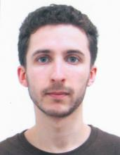
Analysis-Synthesis Approach for Neurosphere Modelisation under Phase-Contrast Microscopy
PhD, University Pierre and Marie Curie, Paris, France
Doctoral School of Computer Science, Telecommunications, Electronics of Paris (EDITE) – ED 130
Defense: 10 March 2014, Paris, France
First position after PhD: Institut Curie, Paris, France
Automated Mitosis Detection in Color and Multispectral High-Content Images in Histopathology
Application: Breast cancer grading in digital pathology
PhD, University Grenoble Alpes, UJF-Grenoble 1
Defense: 20 January 2014, Grenoble, France
First position after PhD: Research Fellow, Harvard Medical School, Boston, USA
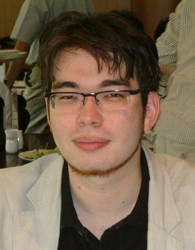
Kernel Methods for the Incorporation of Prior Knowledge into Support Vector Machines
PhD, National University of Singapore
Defense: 11 Dec. 2012, Singapore
First position after PhD: Research Fellow, University Pierre and Marie Curie, Paris, France
Parkinson's Disease Prognosis Using Diffusion Tensor Imaging Features Fusion
Double PhD diploma: University of Franche-Comté and Politehnica University of Timisoara
Defense: 11 Apr. 2011, Besançon, France
First position after PhD: Research Fellow, Mount Sinai University Hospital, New York
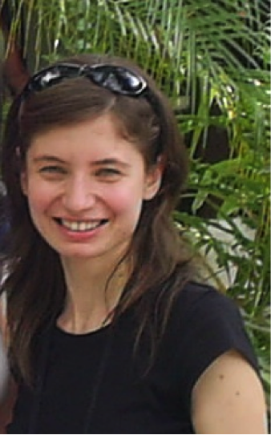
Formal Representation and Reasoning for Microscopic Medical Image-Based Prognosis
Application: Breast cancer grading
Double PhD diploma: University of Franche-Comté and Politehnica University of Timisoara
Defense: 22 Oct. 2010, Timisoara, Romania
First position after PhD: R&D Manager, Sionic SRL, Timisoara, Romania
Dynamic Monitoring Using Temporal Neuro-Fuzzy Systems
PhD, University of Franche-Comté
Defense: 12 Jan. 2006, Besançon, France
First position after PhD: Postdoctoral Fellow in Brazil
Discrete Events Systems Monitoring Using Fuzzy Petri Nets
Application: Flexible production systems e-maintenance
PhD, University of Franche-Comté, Besançon
Defense: 24 Sept. 2004, Târgoviște, Romania
First position after PhD: Associate Professor, University Valahia, Târgoviște, Romania
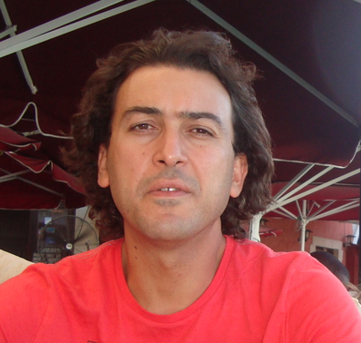
Monitoring Using Dynamic Neural Networks: Application to E-Maintenance
PhD, University of Besançon, France
Defense: 28 Nov. 2003, Besançon, France
First position after PhD: Associate Professor, Conservatoire National des Arts et Métiers, Paris, France